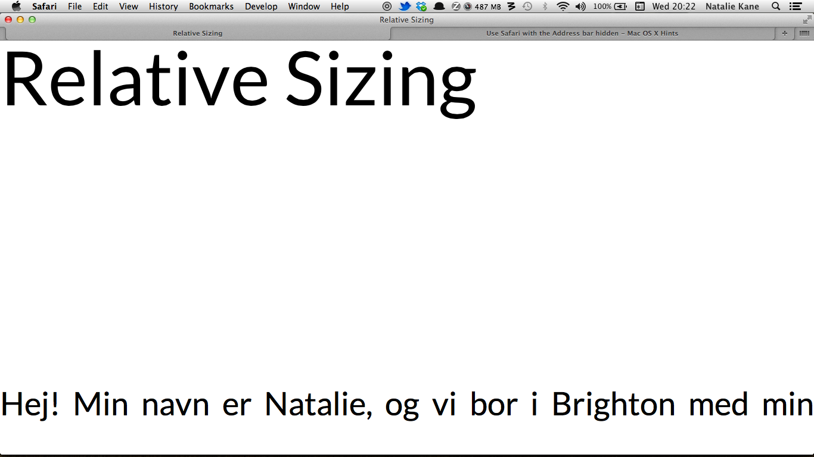

This week I tried to experiment a bit, first by attempting to install and figure out CSS pre-processors myself, and then to try out something completely different. I managed to install stylus successfully, however I wasnÆt entirely sure how to use it. The second was to play with Node. As Aral is currently working on the rather marvellous templating engine Tally in Node.js, I have been rather tempted to see if it’s something I would understand. Now, I should make it very clear that I have only started looking over JavaScript this week, so it was a very confusing time, as I tried looking at making a simple site with Node.js, Express, Stylus and Jade. I followed a very simple tutorial by Ben Gourley on Clock’s Blog ‘A Simple Website in Node.js with Express, Jade and Stylus’ which led me through it.
Before I started learning with Aral, I had learned many things by clumsily following tutorials, even if I didn’t necessarily understand them. This turned out to be the case here, and as I found out, once again, this was not necessarily the right way for me to learn Node, Express, Jade or Stylus properly. I was very proud that I managed to create a basic site using something I’d never used before, however I can confidently say that I’m not entirely sure how I did so. I encountered many error messages while playing with Node that I didn’t understand, which led to many late night cries for help on Twitter. This was a great indication of how supportive the web community are, as within minutes I recieved help, so a big thank you to Micheil Smith for sharing a list of errno system messages for future use.
Now, don’t get me wrong, most of the people in tech I admire learned this way, however, I think I’ve identified where I’m running a bit too far ahead. As Aral reminded me, I should probably get a grasp on JavaScript first. So apart from writing this, that’s what I’ve been very slowly learning this week while at my day job, just don’t tell my boss. I’ve been using ‘Eloquent JavaScript: A Modern Introduction to Programming’ by Marijn Haverbeke, however, I’ve identified that I am very much a 'doer' when learning anything, so just reading something has meant I’m going at a very slow pace.
Before I go into the world of Stylus, I’d like to congratulate myself for not succumbing to any pre-processed dairy or meat jokes when writing this post. It was hard, but I think I’ve reached a level of maturity now where my jokes are a lot more sophisticated, for example, ‘What cheese do you use to lure a bear from a tree?’ ‘Camembert!’ Sorry.
Now, last week we encountered a big problem. Just in case you don’t remember, we had set the root font-size to 1px, and then used rems to set values within the CSS. By setting the root font size to 1px, it allows you to visualise your design better as root ems are set as if they are pixels, e.g. 500px = 500rems. However, we encountered a problem that occurred when we were testing the accessibility of my site, using preferences set in Safari.

Now, above you’ll see the Accessibility panel in Safari Preferences. As a feature, it allows you to limit the font size of the site you’re reading, and changes all of those below your chosen font size. As we encountered, because we had set the root font size at 1px, it set the root font size at 9px, which meant that my design well and truly broke as it made my other elements scale accordingly.
So, setting the root font size to 1px doesn’t work, as the above happens. It’s really very important that your site is accessible, so you have to accomodate for accessibility options.
Now, as we’ve discovered, you can’t use CSS to fix this problem. We also can’t set the root font size to 1px in order for the design to be simple to visualise. However, we’d still like to apply it so that pixels equate to whatever unit we use, in this case, rem, e.g. 16px = 16rem, 500px = 500 rem. We would like our pixels to act like rems.
What if you could find something that would follow a simple instruction to rectify this? For example, if the root font size is set at 16px (which will equal to 1rem), anytime it reads rem it will divide it by 16, meaning you could still design easily and accomodate for Accesibility options. So, if you design your element or attribute with a value of 500rem, it will still equal to 500px, as the application or programme would divide it automatically into 16, corresponding with the root font size:
html
{
font-size: 16px;
}
body
{
font-size: 24rem
}
=
body
{
font-size: 1.5rem /* 24/16 */
}This is where pre-processors come in. We chose Stylus by TJ Holowaychuk, rather than another well-known pre-processor like Sass, as it works with Node, and Aral has experience of using it. Stylus allows you to set a series of conditions on your CSS, such as the rule demonstrated above. We’ll show you how we did this in Stylus a bit later. Stylus is also great for simplifying your CSS. When you started using Stylus, you create a file with the extension '.styl'. Here is where you input your CSS, however, Stylus doesn’t need you to use curly brackets or semi-colons in order to understand you, heck, it barely needs colons:
body
line-height 24px
max-width 600px
margin 108px 24px 48px 24px
font-family 'adelle', Georgia, serifThis compiles neatly into a separate CSS file (which you will have loaded into your html) as such:
body {
line-height: 24px;
max-width: 600px;
margin: 108px 24px 48px 24px;
font-family: 'adelle', Georgia, serif;
}Stylus understands you without all of those curly brackets, but you will need to include colons on pseudoclasses, as they are very important there (I made this mistake and severely broke my design). They pre-process your CSS, which is very handy when you want to solve the problem we encounterd earlier.
This is the perfect time to revisit Aral’s post on Pixel-parity rems. As Aral demonstrates, using CSS Pre-processors and mixins (where you can embed all the properties of a class into another class by including the class name as one of its properties) you can:
This solves all the problems that we encountered when wanting to make a responsive, yet accessible site.
We’ve only just started looking at mixins, however, Aral showed me a simple example that demonstrates how to set an instruction that takes my values set in rems in the Stytlus file, divides them by 16, and provides a pixel fallback all within the CSS:
responsive-pixels(attribute, value)
{attribute} unit(value, 'px')
{attribute} unit(value/16, 'rem')As you can see, the class is set as responsive-pixels, and gives instructions to what happens when this class is set. So, when this class is set, the attributes contained within it will be set a value in pixels (as a fallback for older browsers) and as a value in rems, after they are divided by 16.
body
responsive-pixels('line-height', 24)The above code is how you would set it within the .styl file. Within the body, the class is set — responsive-pixels — and the line-height is indicated as the attribute to apply the rule to. This results as such in the CSS:
body {
line-height: 24px;
line-height: 1.5rem;
}So, as you can see, the line-height has been set in rems, keeping the units relative, and we have provided a fallback for older browsers in pixels. This solves the problems that arose earlier when we attempted to make our design easy to visualise by setting the root font size to 1px. Instead of setting the root font size at 1px, we can set it how we would like it to be, in the above examples, our root font size was set at 24px. By setting rules using a CSS Pre-processor such as Stylus, we can design within the Stylus (.styl) file in a way that is easily visual, all while ensuring our units are relative.
There’s a lot more to be done with CSS Pre-processors which we’ll explore next week, as the mixin provided isn’t necessarily a blanket rule for all…
As you may already know, Aral is an excellent and experienced speaker, and is pretty good at giving talks. In June he’s running a one-day masterclass on presenting called Slide and Stage. I thoroughly recommend you put this in your diary.
Denne weekend, Jeg har været syg. Så har Jeg været at se en masse danske filmer. Denne eftermiddag Jeg vil se 'Klown' af Mikkel Nørgaard med min to katte, da de er en god kur.
Natalie
Copyright © 2013 Natalie D. Kane